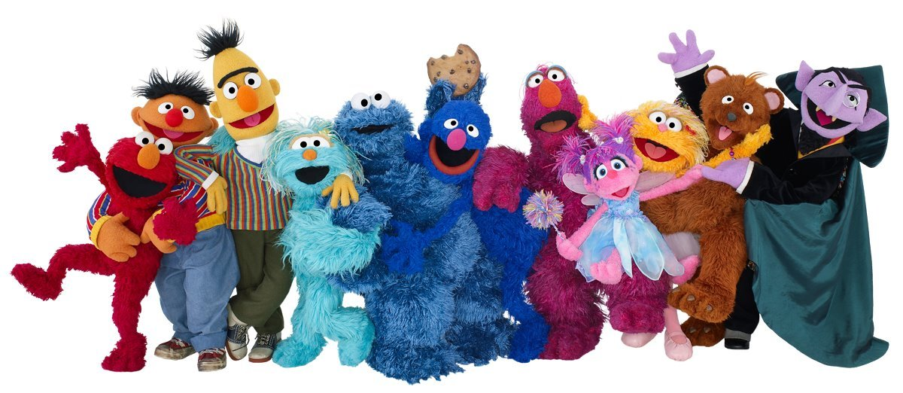

芝麻街
tel：12345678910
芝麻街工作室遵循的原则是:所有儿童均享有学习和发展的机会;他们都能接受学校教育;去更好地了解世界以及他人;去思考、梦想和发现新事物;以及最大限度地发挥其潜力。

《芝麻街》是美国公共广播协会(PBS)制作播出的儿童教育电视节目，该节目于1969年11月10日在全国教育电视台(PBS的前身)上首次播出。它是迄今为止，获得艾美奖奖项最多的一个儿童节目(153项，截止2009年)。这个节目综合运用了木偶、动画和真人表演等各种表现手法向儿童教授基础阅读、算术、颜色的名称、字母和数字等基本知识，有时还教一些基本的生活常识。其中许多的滑稽短剧和小栏目都已成为其他电视节目竞相模仿的典范。